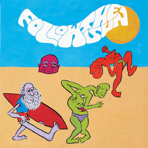
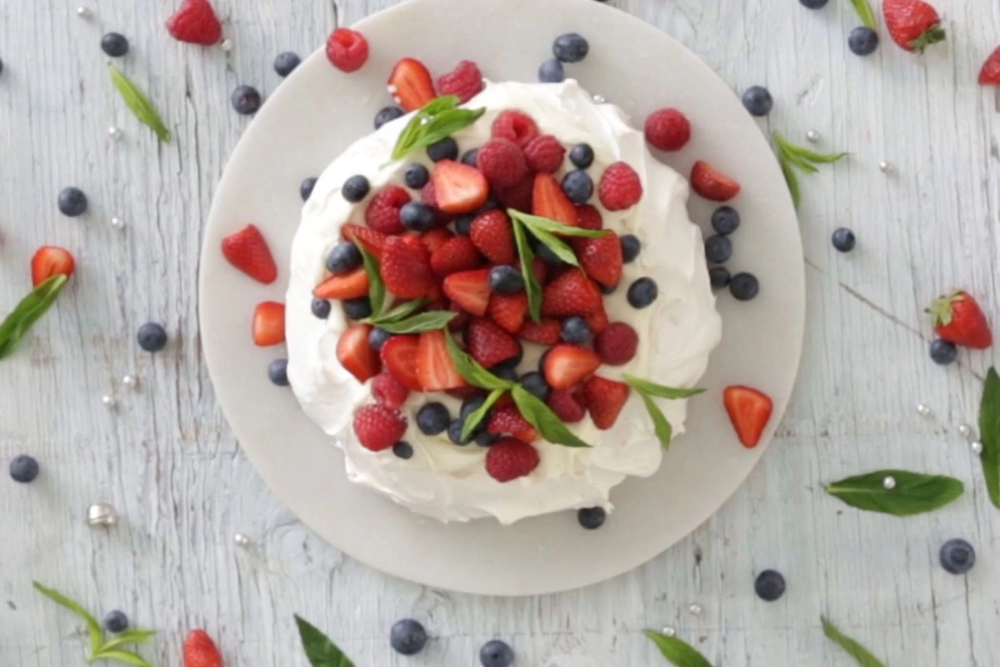

See
Ann Turner's Celia (1989)
Set in the Melbourne suburb of Surrey Hills during the summer of 1958, Ann Turner’s remarkable 1988 debut feature Celia follows eponymous nine-year old Celia Carmichael (Rebecca Smart) as she endures a series of profound personal losses and betrayals that begin with the sudden death of her grandmother.
Order Celia from Second RunListen
Outsider pop, psych and folk
Follow The Sun: a compilation of twenty cuts dug from dusty bins by Mikey Young (Total Control, Eddy Current Suppression Ring) and Keith Abrahamsson (Founder / Head of A&R at Anthology Recordings and Mexican Summer) surveying the sought after sound of Australia’s lesser known moments of ‘70s rock, folk, and their in-between offspring.
 Follow the Sun on BandcampTaste
Sweet controversy
Most people agree that the Pavlova was named after the famous ballerina, Anna Pavlova. But for decades, New Zealand and Australia have been locked in a fierce dispute over which country invented it. One New Zealand academic wrote an entire book on the subject! While she ruled in New Zealand's favour, the mighty 'pav' is too beloved to be struck off the list of iconic Aussie dishes.
 Kaye's pavlova recipe